Продолжаем изучать элементарные задачи по математике. Сегодня мы рассмотрим очень интересную физическую величину — производительность.
Содержание урока- Что такое сила?
- Что такое работа?
- Производительность
- Задачи на совместную работу
- Задачи для самостоятельного решения
Что такое сила?
Сила — это физическое явление, способное изменять форму материальных тел, вызывать их движение, менять направление и скорость движения этих тел или приводить тело в состояние покоя.
Примеры сил:
- ребята слепили снеговика, а хулиганы его разрушили. Получается, что хулиганы приложили к снеговику свою силу, тем самым вызвали изменение формы снеговика;
- на дворе стояла тележка. Прохожий случайно задел её и тележка сдвинулась с места. Получается, что прохожий применил силу к тележке и вызвал её движение;
- далее тот же прохожий остановил тележку, чтобы она далеко не уехала. Получается, что прохожий применил силу, тем самым привел тележку в состояние покоя.
Сила является физической величиной — мерой воздействия на тело других тел. Сила обозначается заглавной латинской буквой F.
Что такое работа?
Работа — это количественная мера действия силы на тело. Работа зависит от количества силы, приложенной на тело и от направления этой силы, а также от перемещения данного тела.
Например, если мы попробуем сдвинуть шкаф с места и он сдвинется, то можно сказать, что мы совершили работу, поскольку сила, которую мы приложили, привела к тому, что шкаф совершил перемещение на некоторое расстояние.
Если же мы, к примеру, попробуем толкнуть стену, то стена с места не сдвинется, а значит и работа не будет совершена, поскольку сила была приложена, но эта сила не вызвала никакого перемещения стены.
Работа обозначается заглавной латинской буквой A.
Производительность
Производительностью называют работу, выполненную за единицу времени. Под единицей подразумевается 1 час, 1 минута или 1 секунда. Производительность обозначается латинской буквой v
Рассмотрим следующий пример. Два пекаря пекли булочки. Первый пекарь испёк 40 булочек за 10 минут, а второй 15 булочек за 5 минут. Как узнать, кто из пекарей работал быстрее, первый или второй?
Работал быстрее тот, кто за одну минуту выпекает больше булочек. Говорят, что у него производительность больше. Для нахождения производительности предусмотрено следующее правило:
Чтобы найти производительность, надо выполненную работу разделить на время работы.
Также, можно воспользоваться формулой:
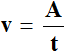
где v — производительность, A — выполненная работа, t — время работы.
Вернемся к нашей задаче. Зная правило или формулу нахождения производительности, можно определить сколько булочек приходится на одну минуту.
Найдём производительность первого пекаря. Разделим работу, которую он выполнил, на время которое он на нее затратил. Выполненная работа это количество испеченных им булочек, то есть 40, а время — 10 минут
40 : 10 = 4 булочки в минуту
Аналогично найдём производительность второго пекаря. Разделим 15 на 5
15 : 5 = 3 булочки в минуту
\[4 > 3\]
Первый пекарь в минуту выпекает больше булочек чем второй, значит его производительность выше. Отсюда делаем вывод, что работает он быстрее второго пекаря.
Также можно воспользоваться формулой нахождения производительности. В этом случае решение принимает следующий вид:
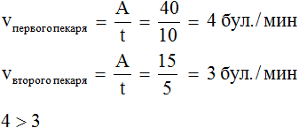
Под буквой v можно делать метки, указывающие для кого/чего мы находим производительность.
Задача 2. Тому нужно за 2 дня прочитать книгу, в которой 100 страниц. В первый день он читал 4 часа со скоростью 12 страниц в час. С какой скоростью ему надо читать оставшуюся часть книги, если у него есть на это 4 часа?
Узнаем сколько страниц Том прочитал в первый день. Он читал 12 страниц в час. Чтению в первый день он посвятил 4 часа, поэтому для нахождения количества прочитанных страниц в первый день, нужно 12 умножить на 4
12 × 4 = 48 страниц прочитано в первый день
Узнаем сколько страниц осталось прочесть. Вычтем из общего количества страниц (100) количество прочитанных страниц (48)
100 − 48 = 52 страницы осталось прочесть
Осталось прочесть 52 страницы. Теперь найдем такую производительность, при которой Том сможет прочесть 52 страницы за 4 часа. Раскидаем 52 страницы на 4 часа поровну
52 : 4 = 13 страниц в час
Ответ: чтобы прочитать оставшуюся часть книги за 4 часа, Том должен читать ее со скоростью 13 страниц в час.
Замечание. В некоторых источниках слово «производительность» может быть заменено на слова «скорость», «эффективность», «продуктивность», «плодотворность».
Задача 3. Один насос работал 4 часа, выкачивая 158 вёдер воды в час, а другой — 3 часа, выкачивая 169 вёдер воды в час. Определить какой из насосов выкачал больше вёдер.
Решение
Определим сколько всего вёдер выкачал каждый насос по отдельности. Для этого умножим их производительность на время их работы:
158 в/ч × 4 = 632 вёдер выкачал первый насос
169 в/ч × 3 = 507 вёдер выкачал второй насос
\[632 > 507\]
Ответ: первый насос выкачала больше вёдер, чем второй.
Задача 4. За 2 часа насос выкачал 80 литров воды. Определить сколько литров он выкачает за 5 часов.
Решение
Сначала нужно определить сколько литров воды насос выкачивает за час. Для этого 80 литров разделим на 2 часа — получим 40 литров
80 : 2 = 40 литров в час
За один час насос выкачивает 40 литров воды. За 5 часов выкачает в пять раз больше
40 × 5 = 200 литров
Ответ: за 5 часов насос выкачает 200 литров воды.
Если известны производительность и время работы, то можно найти выполненную работу. Выполненная работа равна производительности умноженной на время работы:
\[A = v \times t\]
Например, если производительность пекаря составляет 50 булочек в час, и он проработал 4 часа, то можно найти всю выполненную работу за эти четыре часа. Для этого производительность (50 бул/ч) нужно умножить на время его работы (4ч)
50 × 4 = 200 булочек
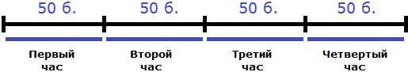
Если известны работа и производительность, то можно найти время работы. Время работы равно отношению выполненной работы к производительности:
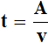
Например, если в неделю бригада отстраивает 2 этажа, то можно узнать сколько недель потребуется для отстройки 8 этажей. Чтобы определить время отстройки восьми этажей, нужно выполненную работу (8 этажей) разделить на производительность (2 эт./нед):
8 : 2 = 4 нед.
Либо с помощью формулы, приведенной выше:
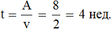
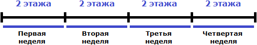
Если в неделю строится 2 этажа, то 8 этажей будет отстроено за четыре недели. В данном случае вся работа была равна восьми. Производительность была равна двум, поскольку по определению производительность есть работа, выполненная за единицу времени – в нашем случае два этажа за неделю.
Задача 6. Принтер работает с производительностью 70 стр./ч. Сколько страниц он напечатает за 5 часов?
Решение
Если в час принтер печатает 70 страниц, то за 5 часов он напечатает в 5 раз больше:
70 × 5 = 350 страниц
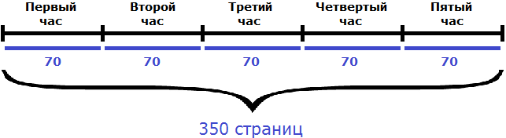
Также, решение можно записать с помощью формулы нахождения работы. В данном случае, количество напечатанных страниц являются выполненной работой:
A = v × t = 70 × 5 = 350 страниц
A = 350 страниц
Задача 7. Принтер напечатал 350 страниц за 5 часов. С какой производительностью он работал?
Решение
Если в течении пяти часов принтер напечатал 350 страниц, то в течении часа он печатал
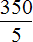
. То есть работал с производительностью 70 страниц в час:350 : 5 = 70 стр./ч.
Либо с помощью формулы нахождения производительности:
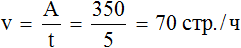
Задача 8. Принтер работал с производительностью 70 страниц в час и напечатал 350 страниц. Определить время работы принтера.
Решение
Выражение «работал с производительностью 70 страниц в час» означает, что в каждом часе принтер печатал по 70 страниц. И это продолжалось до тех пор, пока он не напечатал 350 страниц. Очевидно, что разделив 350 страниц по 70, мы определим время работы принтера, то есть узнаем сколько часов он работал
350 : 70 = 5 ч.
Либо с помощью формулы нахождения времени:
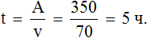
Задача 9. Машинистка в первый день напечатала 48 страниц рукописи, а во второй день — на 12 страниц больше, чем в первый. На всю работу в эти 2 дня она затратила 9 часов. Сколько часов работала она в каждый из этих дней, если производительность её не менялась ?
Решение
Определим сколько страниц напечатала машинистка во второй день. В условии сказано, что напечатала она на 12 страниц больше, чем в первый:
48 + 12 = 60 страниц во второй день.
Определим сколько страниц машинистка напечатала за два дня:
48 + 60 = 108 страниц за два дня.
На эту работу машинистка затратила 9 часов. Также сказано, что производительность её не менялась. Если мы разделим выполненную работу (108) на время выполнения (9), то определим производительность машинистки:
108 : 9 = 12 страниц в час.
Теперь мы можем определить сколько часов работала машинистка в каждый из двух дней. Для этого поочередно разделим выполненные работы в каждом из двух дней на производительность:
48 : 12 = 4 часа работала машинистка в первый день
60 : 12 = 5 часов работала машинистка во второй день.
Задача 10. Джон решил 10 примеров за 5 минут. С какой производительностью он решал эти примеры?
10 примеров это выполненная Джоном работа. 5 минут — время работы. Разделим выполненную работу на время работы и определим производительность Джона:
10 : 5 = 2 примера в минуту.
Производительность Джона равна двум примерам в минуту.
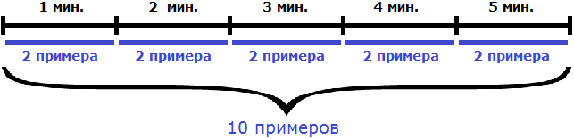
Задача 11. Джон решил несколько примеров за 5 минут. С какой производительностью он решил эти примеры?
Это та же самая задача, что и предыдущая, но в ней работа не выражена каким-либо числом. Сказано лишь то, что Джон выполнил эту работу за 5 минут. Поэтому, конкретную производительность в такой задаче узнать нельзя. Но можно воспользоваться дробями. Обозначим выполненную работу через единицу. Тогда производительность работы Джона будет выражаться дробью – частью примеров, решенных за единицу времени. Если вы изучили задачи на дроби, то должны понимать о чем идёт речь.
Итак, обозначим выполненную работу через единицу:
\[A = 1\]
Мы знаем, что для нахождения производительности, выполненную работу нужно разделить на время. Время работы у нас равно пяти минутам. Поэтому, единицу делим на пять минут:
\(\frac{1}{5}\)
Дробь \(\frac{1}{5}\) выражает часть работы, выполненную Джоном за единицу времени. Если мы вернемся к предыдущей задаче, где выполненная работа была равна десяти примерам и найдем одну пятую от этой работы, то получим 2
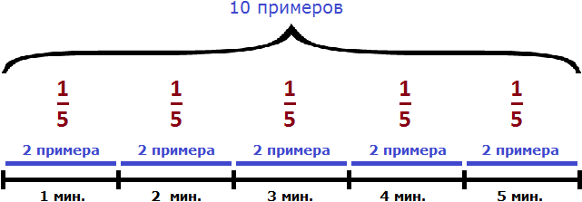
Выражать выполненную работу через единицу часто приходится при решении задач на совместную работу.
Задачи на совместную работу
Задача 1. Первый мастер за 2 часа изготавливает 64 детали, а второй за 3 часа – 72 детали. За сколько часов они изготовят 336 деталей?
В данной задаче речь идет о совместной работе. Необходимо определить производительность обоих мастеров и найти время за которое они изготовят 336 деталей.
Для начала определим производительность первого мастера:
64 : 2 = 32 дет./час
Определим производительность второго мастера:
72 : 3 = 24 дет./час
Определим совместную производительность мастеров. Для этого сложим количество деталей, которые они изготавливают по отдельности за единицу времени. То есть сложим их производительности:
32 дет./час + 24 дет./час = 56 дет./час
Вместе за один час мастера изготавливают 56 деталей. Чтобы узнать за сколько часов они изготовят 336 деталей, нужно определить сколько раз 336 содержит по 56
336 : 56 = 6 часов
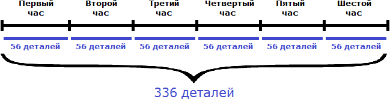
Задача 2. Первый мастер может покрасить забор за 20 минут, а второй мастер – за 30 минут. За сколько минут, работая вместе, они могут покрасить забор?
Решение
В данной задаче, в отличие от предыдущей, работа не выражена каким-либо числом. Сказано лишь то, что эту работу первый мастер может выполнить за 20 минут, а второй за 30 минут.
В такой ситуации можно воспользоваться дробями. Мы можем обозначить всю работу (покраску забора) через единицу.
Итак, обозначим работу (покраску забора) через единицу:
\[A = 1\]
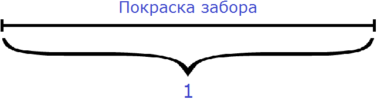
Производительность первого мастера будет выражáться дробью  . То есть за одну минуту он покрасит одну двадцатую часть забора. Единица это вся работа, а двадцать минут это время работы. Запишем производительность первого мастера с помощью формулы нахождения производительности:
. То есть за одну минуту он покрасит одну двадцатую часть забора. Единица это вся работа, а двадцать минут это время работы. Запишем производительность первого мастера с помощью формулы нахождения производительности:
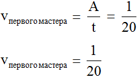
А производительность второго мастера будет выражáться дробью  . То есть за одну минуту он покрасит одну тридцатую часть забора:
. То есть за одну минуту он покрасит одну тридцатую часть забора:
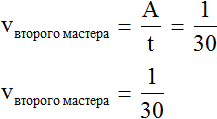
Определим общую производительность мастеров. Для этого сложим дроби, выражающие производительность первого и второго мастеров:
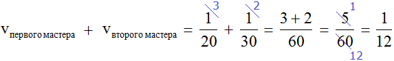
 это дробь, выражающая общую производительность обоих мастеров. То есть за одну минуту мастера вместе покрасят
это дробь, выражающая общую производительность обоих мастеров. То есть за одну минуту мастера вместе покрасят  часть забора.
часть забора.
Определим время за которое мастера покрасят забор вместе. Для этого воспользуемся формулой нахождения времени: разделим выполненную работу на общую производительность мастеров. Выполненная работа у нас выражена единицей, а производительность — дробью 
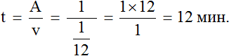
Ответ: работая вместе, мастера покрасят забор за 12 минут.
Задача 3. Первый рабочий может выполнить заказ за 8 часов, а второй за 6 часов. Два часа они работали вместе, а заканчивал работу один второй рабочий. Сколько времени потребовалось для выполнения этого заказа?
Решение
Обозначим всю работу через единицу
\[A = 1\]
Тогда первый рабочий за один час может выполнить \(\frac{1}{8}\) часть работы, а второй рабочий \(\frac{1}{6}\) часть работы. А вместе за один час они могут выполнить
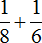
часть работы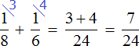
Рабочие работали вместе два часа, поэтому умножим часть работы, выполняемую ими за один час на 2:
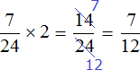
Остальную часть работы, а именно  работы заканчивал один второй рабочий:
работы заканчивал один второй рабочий:
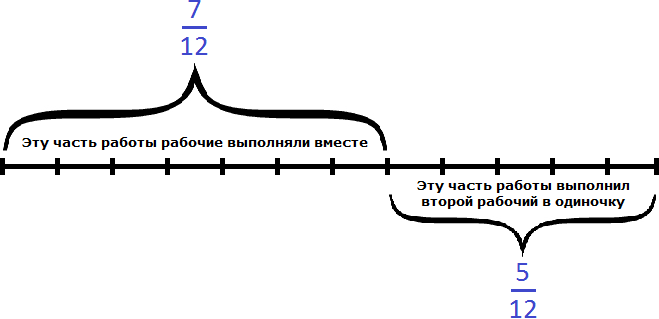
Второй рабочий за один час мог выполнить \(\frac{1}{6}\) часть работы. Чтобы определить время за которое он завершил оставшуюся  часть работы, воспользуемся формулой нахождения времени.
часть работы, воспользуемся формулой нахождения времени.
Переменная A теперь равна  , переменная v — \(\frac{1}{6}\)
, переменная v — \(\frac{1}{6}\)
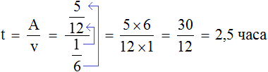
Теперь определим общее время заказа. Первые два часа рабочие работали вместе, остальную часть работы второй рабочий выполнил за два с половиной часа, отсюда имеем 4,5 ч.
2 + 2,5 = 4,5 ч.
Ответ: для выполнения заказа потребовалось 4,5 ч.
Задача 4. Одна труба наполняет бассейн за 6 ч, а другая – за 4 ч. За
сколько часов наполняют бассейн обе трубы, работая вместе?
Решение
Обозначим работу (наполнение бассейна) через единицу
\[A = 1\]
Тогда первая труба за один час выполнит \(\frac{1}{6}\) часть работы, а вторая труба — \(\frac{1}{4}\) часть работы. Работая вместе за один час они выполнят
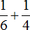
часть работы: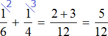
Определим время за которое обе трубы наполняют бассейн, работая вместе:
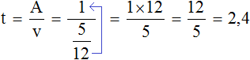
2,4 это два целых часа и четыре десятых часа
2,4 = 2 ч + 0,4 ч
А четыре десятых часа это 24 минуты
60 мин. × 0,4 = 24 мин.
Ответ: работая вместе обе трубы наполнят бассейн за 2 ч 24 мин.
Задачи для самостоятельного решения
Показать решение
Решение
Обозначим работу через единицу:
\[A = 1\]
Тогда первая бригада за один час выполнит  часть работы, а вторая за один час
часть работы, а вторая за один час  часть работы. Их общая производительность равна сумме дробей и :
часть работы. Их общая производительность равна сумме дробей и :
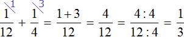
Определим время за которое обе бригады выполнят задание, работая вместе:
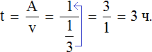
Ответ: обе бригады выполнят задание за 3 часа.
Показать решение
Решение
Работа в данном случае это съедание копны сена. Обозначим её через единицу:
\[A = 1\]
Тогда производительность лошади будет выражáться единицей, производительность коровы — дробью  , производительность овцы — дробью
, производительность овцы — дробью  . Их совместная производительность равна следующей сумме:
. Их совместная производительность равна следующей сумме:
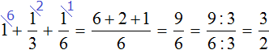
Определим время, за которое лошадь, корова и овца съедят 1 копну сена:
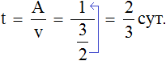
Ответ: лошадь, корова и овца съедят 1 копну сена за  суток или 16 часов.
суток или 16 часов.
Показать решение
Решение
Работа в данном случае это наполнение сосуда. Обозначим эту работу через единицу:
\[A = 1\]
В условии сказано, что сосуд наполняется шлангом за 12 минут. Значит в минуту будет наполняться часть сосуда. При этом сказано, что одновременно открыт кран сосуда и из него вытекает вода, которой наполняется сосуд. Вода, которая вытекает равна  части сосуда, поскольку в условии сказано, что полный сосуд опорожняется за 20 минут.
части сосуда, поскольку в условии сказано, что полный сосуд опорожняется за 20 минут.
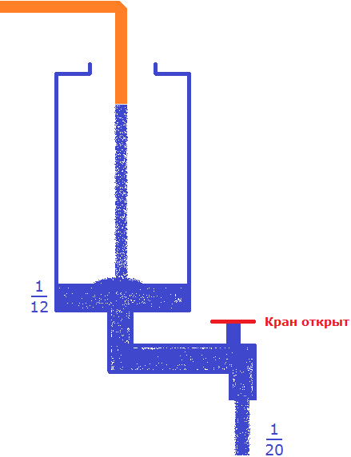
В сосуд поступает воды больше, чем вытекает. Дробь больше, чем .
Несмотря на то, что часть поступающей в сосуд воды будет вытекать, с каждой минутой сосуд будет пополняться на определенную часть. Узнаем, что эта за часть. Для этого из поступающей части вычтем ту часть, которая вытекает:
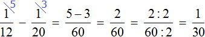
Каждую минуту сосуд будет наполняться на  .
.
Определим время за которое наполнится пустой сосуд, если одновременно открыть кран и вливать в него воду через шланг:
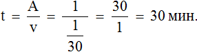
Ответ: если одновременно открыть кран и вливать в пустой сосуд воду через шланг, то он наполнится за 30 минут.
Показать решение
Решение
Работа в данном случае это заполнение бассейна. Обозначим эту работу через единицу:
\[A = 1\]
Производительность заполнения бассейна через первую трубу будет выражáться дробью , через вторую трубу — дробью . Совместная производительность будет выражáться дробью
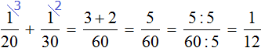
Производительность по определению есть работа, выполненная за единицу времени. Значит дробь является ответом к задаче, поскольку нас интересовало какая часть бассейна заполнится через обе трубы за 1 час. Это можно проверить, воспользовавшись формулой нахождения работы. Переменная v у нас имеет значение , а переменная t равна единице (одному часу). Формула нахождения работы позволит нам определить какая часть работы будет выполнена за 1 час:
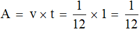
Ответ: за один час заполнится часть бассейна.
Показать решение
Решение
В задаче подразумевается, что экскаватор работал с одинаковой производительностью на протяжении всей работы. На работу требовалось затратить 10 ч. Проработано было 8 ч. Значит осталось еще 2 часа. На 2 часа приходятся оставшиеся 50 метров траншеи. Если разделить 50 метров на 2, то можно определить сколько метров экскаватор прокладывает за один час:
50 : 2 = 25 м./ч
В час экскаватор прокладывал 25 метров. Работал он 10 часов. Умножим 25 на 10, мы определим общую длину траншеи:
25 × 10 = 250 м
Ответ: общая длина траншеи составляет 250 м.
Показать решение
Решение
Для удобства переведем время данное в задаче в секунды
6 мин 40 с = 400 с
8 мин = 480 с
13 мин 20 с = 800 с
Обозначим заполнение ванны через единицу:
\[A = 1\]
Производительность первого крана будет выражáться дробью
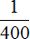
, производительность второго крана — дробью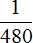
. Совместная производительность обоих кранов равна сумме дробей и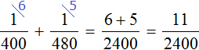
Одновременно с открытыми двумя кранами, вынута пробка из ванны. Поэтому часть поступающей в ванну воды сразу выходит через слив. Эта часть будет выражáться дробью
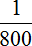
.С каждой секундой ванна будет пополняться на определенную часть воды. Узнаем какая это часть. Для этого из поступающей части воды вычтем ту часть, которая вытекает через слив.
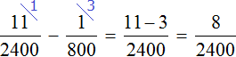
Определим сколько времени понадобится, чтобы наполнить ванну:
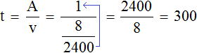
Ванна наполнится за 300 секунд. Поскольку задача завершена, секунды можно обратно перевести в минуты. Триста секунд это пять минут:
300 : 60 = 5 мин
Ответ: ванна заполнится за 5 мин.
Понравился урок?
Вступай в нашу новую группу Вконтакте и начни получать уведомления о новых уроках